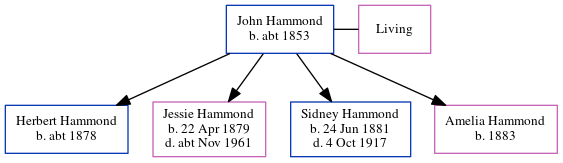

Amelia Emily Hammond 1883 -
[ Home ] | [ Calendar ] | [ Surnames Index ] | [ Errors ] | [ Family History ]A dressmaker and the child of John Hammond and Mary Standing (a lodge house keeper), Amelia Hammond, the third cousin twice-removed on the father's side of Nigel Horne, was born in Folkestone, Kent, England in 18831,2,3.
During her life, she was living at her birthplace on 5 Apr 18915, on Richmond Street in Folkestone in 19011 and on 31 Mar 19016, and at 4 Richmond Street in Folkestone on 2 Apr 19114.
Parents
- John Rouse was born c. 1853
- Mary Ann
Citations
- 1901 England Census Online publication - Provo, UT, USA: The Generations Network, Inc., 2005.Original data - Census Returns of England and Wales, 1901. Kew, Surrey, England: The National Archives of the UK (TNA): Public Record Office (PRO), 1901. Data imaged from the National (Relation to Head of House: Daughter)
- 1911 England Census Online publication - Provo, UT, USA: Ancestry.com Operations, Inc., 2011.Original data - Census Returns of England and Wales, 1911. Kew, Surrey, England: The National Archives of the UK (TNA), 1911. Data imaged from the National Archives, London, England.
- England & Wales, FreeBMD Birth Index, 1837-1915 Online publication - Provo, UT, USA: The Generations Network, Inc., 2006.Original data - General Register Office. England and Wales Civil Registration Indexes. London, England: General Register Office. © Crown copyright. Published by permission of the Cont
- 1911 Census for England & Wales - Findmypast (was age 27 and the daughter of the head of the household)
- 1891 England, Wales & Scotland Census - Findmypast (was age 7 and the daughter of the head of the household)
- 1901 England, Wales & Scotland Census - Findmypast (was age 17 and the daughter of the head of the household)
Media
England & Wales births 1837-2006 Transcription - BMD-B-1883-3-AZ-000235-050
British Merchant Navy, First World War Medal Cards 1914-1925 Transcription - GBM-BT351-087771
1891 England, Wales & Scotland Census - GBC/1891/0005997897
Family Tree
Map
Generated by ged2site. Last updated on Jul 3, 2024
Known Issues
Location for 5 Apr 1891 (Folkestone, Kent, England) differs from mother's (4 Richmond Street, Folkestone, Kent, England)
5 Apr 1891: Not living with either parent in childhood when aged 8